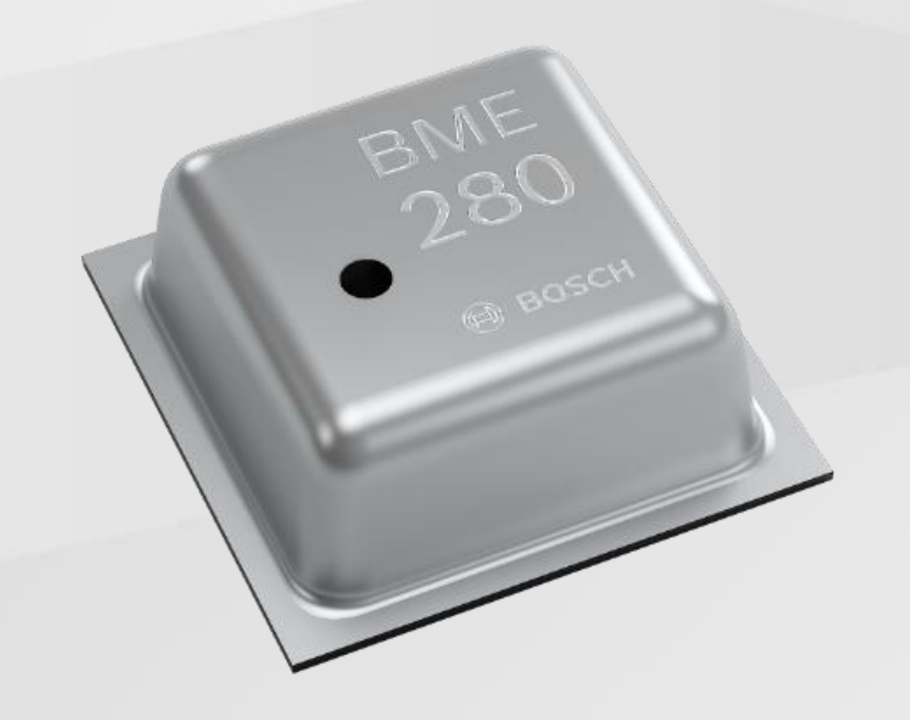

ESP32 Project - C3 SuperMini - BME280 sensor
온도-습도-기압 센서, BME280🜨
ESP32 기상관측기의 심장입니다. 온도, 습도, 기압 — 이 세 가지 핵심 기상요소를 센서 하나로 측정합니다.
왜 BME280인가?
처음에는 저렴하고 흔한 DHT11로 시작할까 고민했습니다. 하지만 DHT11은 온습도만 측정하고, 기압이 없습니다. 기상관측기라면 기압이 핵심인데, 빠지면 아쉽습니다.
BME280은 Bosch가 만든 환경 센서로, 손톱보다 작은 칩 하나에서 온도, 습도, 기압을 동시에 읽을 수 있습니다. ESP32 기상관측기로는 이것만으로도 충분합니다.

사실, BME280은, 온도와 기압만 측정되고 습도는 측정 불가한 BMP280의 업그레이드 버전입니다.
BMP280(온도, 기압) 말고, BME280(온도, 습도, 기압)인지 꼭 확인하고 구입하셔야 합니다.
| 항목 | DHT11 | BMP280 | BME280 |
|---|---|---|---|
| 온도 측정 범위 | 0 ~ 50°C | -40 ~ 85°C | -40 ~ 85°C |
| 온도 정확도 | ±2°C | ±1°C (0~65°C) | ±1°C (0~65°C) |
| 습도 측정 범위 | 20 ~ 80% RH | ❌ 없음 | 0 ~ 100% RH |
| 습도 정확도 | ±5% RH | ❌ 없음 | ±3% RH |
| 기압 측정 범위 | ❌ 없음 | 300 ~ 1100 hPa | 300 ~ 1100 hPa |
| 기압 정확도 | ❌ 없음 | ±1 hPa | ±1 hPa |
| 고도 추정 | ❌ 없음 | ±1 m | ±1 m |
| 통신 방식 | 단선 디지털 | I2C / SPI | I2C / SPI |
| 측정 간격 | 최소 1 s | 기상관측용 0.5 s~ |
기상관측용 0.5 s~ |
BME280을 검색해보면 BME280 센서를 장착한 다양한 형태와 가격의 모듈(보드)들이 나옵니다. 그중에서 신뢰할 만한 제조사인 Adafruit사의 BME280 보드와 중저가 제조사인 MJKDZ의 BME280 모듈, 저가형 DHT11 모듈을 간단한 측정 실험을 통해 비교해보았습니다.
세 가지 센서를 동시에 약 100회(2초 간격) 이상 측정하며 직접 비교해보니, BME280 센서 간에는 측정 오차보다도 작은 차이가 보였고, DHT11과 BME280의 측정값은 온도는 약 1.2°C, 습도는 약 11% 차이가 났습니다.
MJDKZ 보다 더 저렴한 BME280는 시도해보지 못 했지만, BOSCH사의 BME280 센서칩을 사용하는 제품이라면 비슷한 결과가 나올 것으로 생각됩니다.
센서 비교 실험 데이터와 그래프는 부록 A. 센서 비교 실험에서 확인하실 수 있습니다.
실습 준비물
- ESP32-C3 SuperMini
- BME280 모듈
- 점퍼 케이블 4개 (암-암)
배선
BME280은 I2C 또는 SPI 방식으로 ESP32-C3 Supermini와 통신할 수 있습니다. I2C는 연결이 쉽지만 통신 속도가 느리고, SPI는 연결이 복잡지만 안정되고 빠른 통신이 가능합니다. 실습용으로는 I2C로 핀 4개만 C3에 연결하면 됩니다.
| BME280 모듈 | C3 SuperMini |
|---|---|
| VIN | 3.3V |
| GND | GND |
| SDA | GPIO6 |
| SCL | GPIO7 |
주의: BME280 모듈에 따라 SDA 핀이
SDI로, SCL이SCK로 표기되어 있는 경우가 있습니다.I2C 핀 선택 이유: GPIO8/9는 스트래핑 핀이라 I2C로 쓸 수 없습니다. GPIO4/5는 UART와 충돌 가능성이 있어서, 안전한 GPIO6/7을 SDA/SCL로 지정했습니다.
라이브러리 설치
아두이노 IDE → 라이브러리 매니저에서 두 가지를 설치합니다.
Adafruit BME280 Library검색 → 설치Adafruit Unified Sensor도 함께 설치 (의존성으로 같이 설치하라는 팝업이 뜹니다)
라이브러리(library)와 의존성(dependancy)이란?
라이브러리(library)는 일반적인 컴퓨터에서 어떤 장치, 프로그램을 사용할 때 필요한 드라이버(driver)와 비슷하다고 생각하시면 됩니다. 드라이버가 없으면 장치 인식이 안되듯, 해당 센서의 라이브러리가 설치되어 있지 않으면 센서를 사용할 수 없습니다.
의존성(dependanct)은 어떤 라이브러리를 설치하여 사용할때 그 기반이 되는 또다른 라이브러리, 프로그램 등을 말합니다. 즉, Adafruit BME280 Library를 사용하려면 Adafruit United Sensor 라이브러리도 설치해야합니다.
예제 코드 bme280.ino
아래 bme280.ino로 저장하여 아두이노 IDE에서 C3 SuperMini로 업로드합니다. 이후 시리얼 모니터(115200)를 열면 데이터가 출력됩니다.
#include <Wire.h>
#include <Adafruit_Sensor.h>
#include <Adafruit_BME280.h>
#define BME_SDA 6
#define BME_SCL 7
#define BME280_ADDR 0x77 // 안되면 0x76 시도
Adafruit_BME280 bme;
void setup() {
Serial.begin(115200);
delay(1000);
Wire.begin(BME_SDA, BME_SCL);
if (!bme.begin(BME280_ADDR)) {
Serial.println("BME280을 찾을 수 없습니다.");
Serial.println("배선과 I2C 주소를 확인하세요.");
while (1);
}
Serial.println("BME280 연결 성공!");
}
void loop() {
Serial.println("----------");
Serial.print("온도: ");
Serial.print(bme.readTemperature());
Serial.println(" °C");
Serial.print("습도: ");
Serial.print(bme.readHumidity());
Serial.println(" %");
Serial.print("기압: ");
Serial.print(bme.readPressure() / 100.0F);
Serial.println(" hPa");
Serial.print("고도(추정): ");
Serial.print(bme.readAltitude(1013.25));
Serial.println(" m");
delay(2000);
}
트러블슈팅(Troubleshooting)
만약 첫 번째 시도에서 시리얼 모니터에 온도, 습도, 기압값이 표시된다면,
여러분은 이미 바이브 메이커일지도 모릅니다.
어쩌면, '바이브-'가 필요없는 메이커일지도 모르겠네요.
저는 여전히 새로운 센서를 접하고 연결해서 측정값을 보기까지 수 십 분에서, 수 시간이 걸립니다. AI의 도움을 받으면서요. AI 도움이 없다면 아마 몇 주일이 걸릴 수도 있을 겁니다. 제가 드론에 연결할 카메라 센서를 언박싱하고, 화면을 띄우기까지 약 한달 정도 걸렸던 것이 기억납니다. 불과 몇 년 전인데 그때는 AI 없이 맨땅에 헤딩하는 심정으로 매달렸어요.
바이브 메이킹의 진정한 묘미는, AI와 함께하는 디버깅과 트러블슈팅에 있습니다. 이 과정은 AI와 대화해본 경험만 있다면 누구나 할 수 있습니다. IDE에서 뜨는 에러메시지를 복사해서 AI에게 보여주거나, '이렇게 했는데 이게 잘 안 돼' 이런 식으로 설명하기만 하면 가능성을 분석해서 해결방안을 제시해줍니다.
시리얼 모니터에 아무것도 안 뜰 때
- 아두이노 IDE Tools 메뉴 → USB CDC On Boot → Enabled
- 시리얼모니터 보드레이트 115200 확인
- 업로드 후 RESET 버튼
'BME280을 찾을 수 없습니다.' 메시지가 뜰 때
배선 문제일 가능성이 매우 높습니다.
제일 먼저, BME280의 VIN핀과 C3의 3v3핀, BME280의 GND와 C3의 GND핀이 연결되어 있는지 확인해주세요.
그리고나서, BME280의 SDA핀이 C3의 GPIO6핀('6'핀), SCL이 GPIO7핀('7'핀)에 연결되었는지 확인합니다.
짜잔~! 드디어 데이터를 읽었습니다! 👏 🎉 👍
BME280 연결 성공!
----------
온도: 22.94 °C
습도: 61.03 %
기압: 1001.89 hPa
고도(추정): 95.03 m
----------
Vibe Making으로 더 해보며 정리하기🜨
기본 예제가 동작했다면, 이제 AI와 대화하며 직접 실습해보세요.
Vibe 1
"측정값을 CSV 형식으로 출력해서 엑셀에 붙여넣기 쉽게 해줘"
코드 보기
// setup()에 한 번만 Serial.println("온도(°C),습도(%),기압(hPa),고도(m)");
// loop()에서
Serial.print(bme.readTemperature()); Serial.print(",");
Serial.print(bme.readHumidity()); Serial.print(",");
Serial.print(bme.readPressure() / 100.0F); Serial.print(",");
Serial.println(bme.readAltitude(1013.25));
Vibe 2
"시리얼 모니터처럼 온도, 습도, 기압 측정값을 실시간 그래프를 볼 수 있게 해줘"
코드 보기
#include <Wire.h>
#include <Adafruit_Sensor.h>
#include <Adafruit_BME280.h>
#define BME_SDA 6
#define BME_SCL 7
Adafruit_BME280 bme;
void setup() {
Serial.begin(115200);
Wire.begin(BME_SDA, BME_SCL);
if (!bme.begin(0x76) && !bme.begin(0x77)) {
while (1);
}
}
void loop() {
// 시리얼 플로터용 출력: 온도, 습도, 기압 순서
<light>Serial.print(bme.readTemperature());</light>
Serial.print(",");
Serial.print(bme.readHumidity());
Serial.print(",");
Serial.println(bme.readPressure() / 100.0F);
delay(100);
}
다음은 측정값을 스마트폰으로 출력할 WiFi 웹서버 구축으로 넘어가겠습니다.
부록 A. 센서 비교 실험
이 부분은 제가 궁금해서 해봤습니다. "왜 BME280을 선택했는가"에 대한 기록입니다.
MJKDZ BME280 모듈(약 10,000원)과 Adafruit BME280 브레이크아웃보드(약 30,000원), 그리고 DHT11(약 1000원)을 동시에 연결해서 데이터를 비교해봤습니다.
- 결과 요약
| 항목 | MJKDZ vs Adafruit | DHT11 vs BME280 |
|---|---|---|
| 온도 차이 | 평균 0.02°C | 약 1.2°C |
| 습도 차이 | ±0.1% 이내 | 약 11% |
| 기압 차이 | ±0.05hPa | 측정 불가 |
MJKDZ와 Adafruit의 차이는 BME280 센서 측정 오차(±1°C, ±3%) 범위 내로, 교육용 기상관측기로는 저가형으로도 충분합니다.
DHT11은 온습도 차이가 크고 기압을 측정할 수 없어서 기상관측기용으로 사용하려면 다른 센서가 추가로 필요합니다.